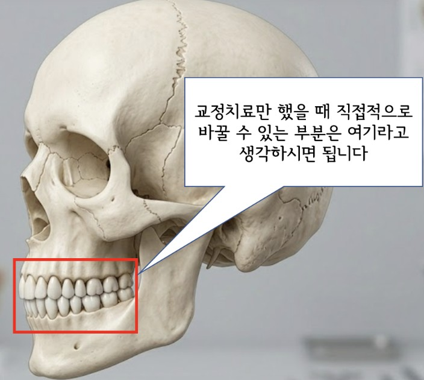
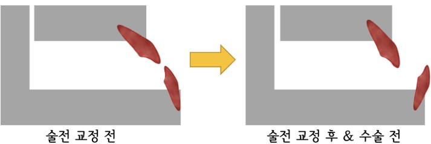
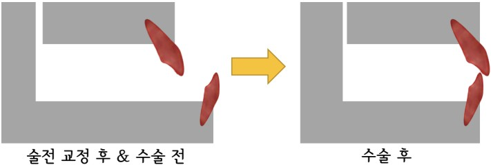
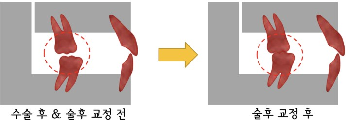

대학병원에 있다보면 아무래도 양악수술을 동반한 교정치료를 상당히 많이 접하게 됩니다. 보통 턱이 너무 발달한 '주걱턱', 반대로 턱이 너무 작은 '무턱', 그리고 '안면 비대칭' 케이스에 해당하게 되는데요. 오늘도 세 분이나 양악 수술 관련 상담을 진행한 김에 이에 대해 설명드려볼까 합니다 :)
교정치료를 함에 있어 가장 중요한 것 중 하나는 환자가 무엇을 가장 고치고 싶어 하는가! 입니다. 환자는 사실 마음속으로 '주걱턱의 안모' 개선도 원하지만, "앞니가 반대로 물려서 이걸 고치고 싶어요"라고만 말할 수도 있거든요.
그래서 저는 수술 교정이 필요할 수도 있겠다 싶은 환자분과 상담할 때는, 정말 치열만을 고치고 싶은 건지? 혹은 치열과 함께 외모도 개선되었으면 하는지? 이 부분을 정확히 읽어내려고 노력합니다.

만일 위 그림에서의 빨간 박스 밖에 있는 것들의 변화를 원한다면 (예를 들어 턱의 위치, 크기, 비대칭적인 모양 등) 대개는 교정치료만으로 만족스러운 결과를 얻기 어렵기 때문에 수술 교정이라는 옵션을 설명드릴 수밖에 없습니다.
이제 주걱턱 환자를 예로 들어 수술 교정의 과정을 설명드리겠습니다.

인간은 적응의 동물이라고 했나요. 주걱턱 환자의 구강을 보면 치아들이 어떻게든 서로 닿으려고 쓰러져 있는 모습을 볼 수 있습니다.
위아래 턱뼈의 위치 이상 → 치아의 각도도 이에 맞춰 적응 (역시 비정상적 각도) = 결과적으로 어찌어찌 맞는 상태라고 요약하면 될 것 같습니다.
이 상태에서 바로 수술을 통해 턱뼈의 위치를 바로 잡아버린다면?
치아의 각도 비정상으로 인해 수술의 난이도가 높아지고, 원하는 수술량을 얻기 어려워지며, 치료의 안정성 역시 상당히 떨어지게 됩니다.
그렇기 때문에 수술하기 전 각각의 턱뼈에 맞게 치아의 위치와 각도를 정상화시켜주는 과정이 흔히 필요한데, 이 과정이 바로 '술전 교정'에 해당합니다!
술전 교정은 최초 부정교합 양상, 발치 여부, 악골 확장 여부 등에 따라 다르지만 보통은 1년 전후로 마무리한 뒤 수술을 의뢰드립니다.

보통 구강악안면외과에 의뢰를 드리고, 양악수술이라 부르는 악교정 수술을 진행하게 됩니다. 수술을 통해 잘못된 턱뼈의 위치를 바로잡게 되며 회복 기간은 통상 1달 정도 소요됩니다.

수술하고 오면 끝~ 이 아닙니다. 아무리 술전 교정을 야무지게 시행했어도 수술 직후에는 어금니 교합이 긴밀하지 않습니다.
따라서 수술 후 1달부터 술후 교정을 진행하게 되며, 이 단계의 주된 목적은 어금니 교합을 긴밀하게 맞추는 것입니다. 이 시기에는 치아를 더 잘 맞물리게 하기 위해 고무줄을 착용해야 하는데, 열심히 껴주셔야 그만큼 술후 교정이 효율적으로 진행됩니다.
이상 수술교정에 대해 최대한 간단하게 설명드려 보았습니다.
이 글을 읽는 분들께서 조금이나마 '아~ 무슨 말인지 대충은 알겠네'라고 했다면 대성공입니다! (YES!)
앞으로도 환자분들과 상담하면서 '이런 것들을 궁금해 하시는구나' 하는 부분들을 하나하나 적어볼 예정입니다.
긴 글 읽어주셔서 감사드립니다.
교정과의사 손창한이었습니다 :)